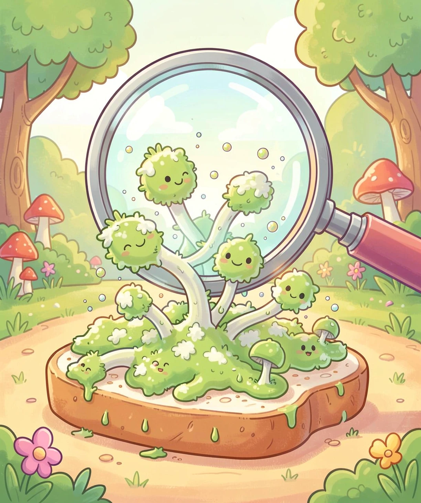
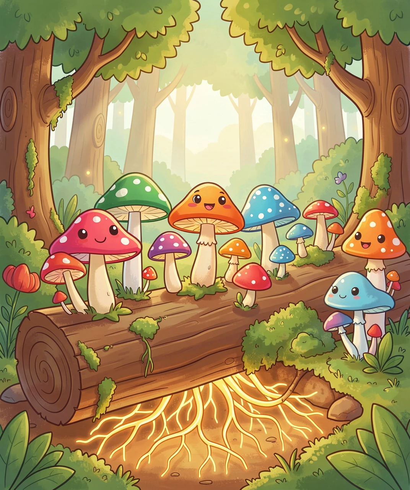
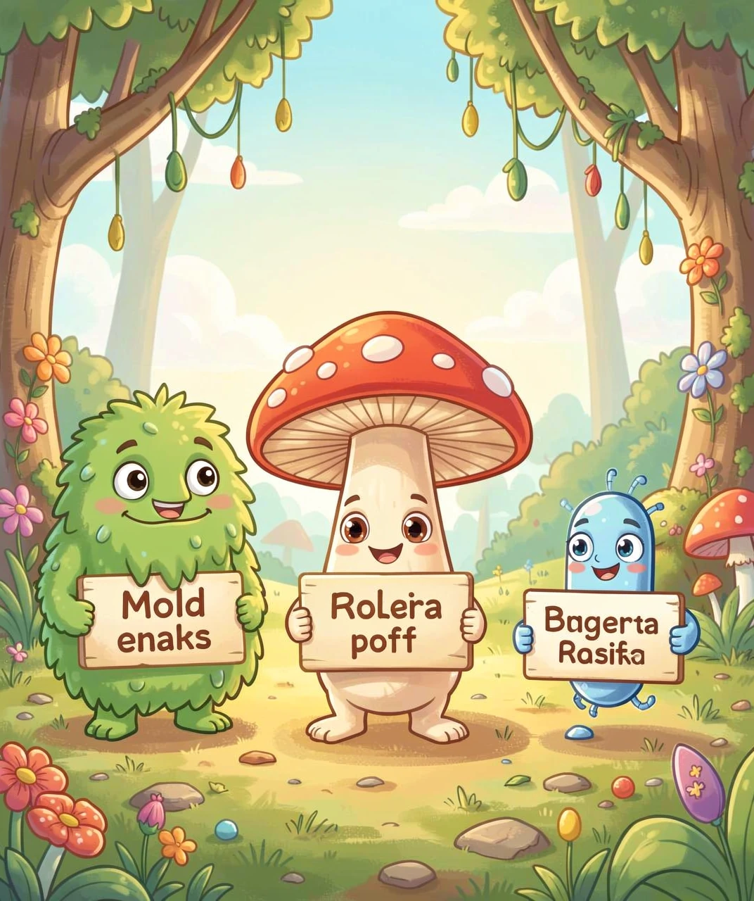
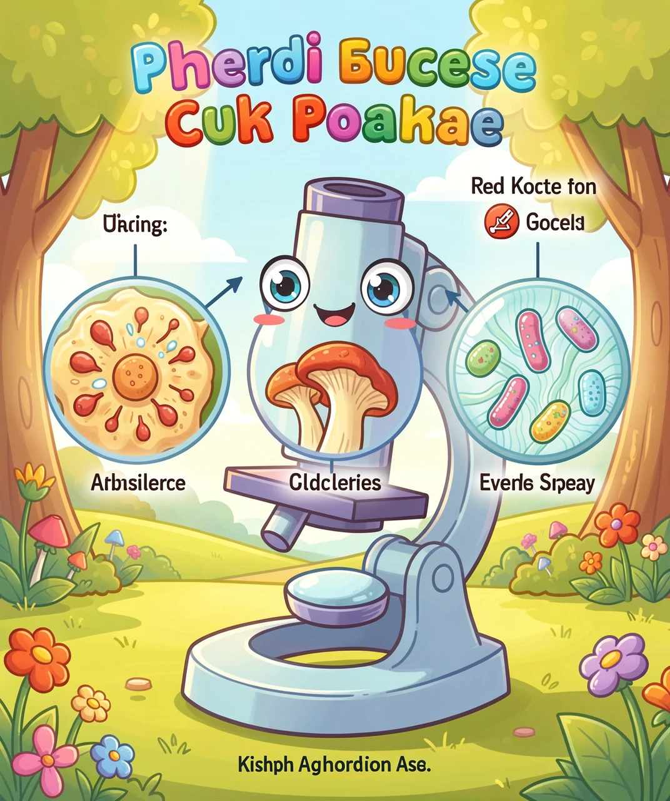
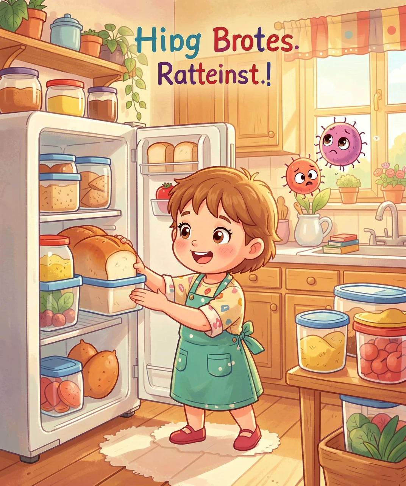

一块发霉的面包上，到底住着谁？
你有没有见过这样的场景：面包放了几天忘记吃，上面长出了一层绿色的毛毛？妈妈会说「面包发霉了，不能吃了」，然后把它扔掉。
但你想过没有——这些绿色的毛毛到底是什么东西？如果拿显微镜看一看，你会发现这些毛毛不是植物、不是动物，而是属于一个神秘的生物王国：真菌。
而发霉的那个「霉」，只是真菌家族里的一小类——霉菌。
那细菌又是什么呢？为什么有时候妈妈说「细菌感染了要吃药」，有时候又说「酸奶里的细菌对身体好」？
今天，我们就来把这三个容易搞混的「微生物三兄弟」彻底搞清楚！

🔬 图1：放大看看发霉面包上都有什么
在生物学分类里，真菌是一整个「王国」——就像动物王国、植物王国一样，真菌也有自己的专属王国！
真菌家族里有很多你认识的成员：
🍄 蘑菇——菜市场里卖的香菇、金针菇、杏鲍菇，都是真菌！蘑菇其实是真菌的「果实」，就像苹果是苹果树的果实一样。蘑菇冒出地面，是为了把孢子（真菌的「种子」）散播到空气中去。
🍞 酵母——烤面包、蒸馒头时放的那一小勺酵母粉，也是真菌！它是个单细胞的微小真菌，能把面粉里的糖变成二氧化碳气体，馒头就变得又松又软了。
🟢 霉菌——面包上的绿毛、橘子上的蓝绿斑点，这些都是霉菌。霉菌也是真菌，它们是「丝状真菌」——身体由一根根细细的菌丝组成，像棉花糖一样蓬松。
所以记住这个关系：霉菌 是 真菌 的一种！就像「狗 是 动物 的一种」一样。

🍄 图2：森林里的蘑菇是真菌的果实，地下菌丝才是真身
好，现在我们来认识一个跟真菌「完全不是一家人」的微生物——细菌。
细菌和真菌（包括霉菌）的区别，比老虎和蘑菇的区别还大！它们在不同生物分类体系中甚至不属于同一个「域」——这是比「界」还高一级的分类，是生命最根本的分支。
来看看它们的核心区别：
| 特征 | 真菌（含霉菌） | 细菌 |
|---|---|---|
| 细胞类型 | 真核生物（有细胞核） | 原核生物（没有细胞核） |
| 大小 | 比较大（显微镜下清晰可见） | 非常小（真菌的 1/10 到 1/100） |
| 生长方式 | 长成菌丝或出芽 | 分裂成两个（一分为二） |
| 繁殖 | 靠孢子（像种子） | 直接分裂（裂殖） |
| 细胞壁成分 | 几丁质（和螃蟹壳一样！） | 肽聚糖（独有的） |
| 和人类的关系 | 蘑菇能吃、酵母做面包、霉菌做青霉素 | 肠道菌群帮消化、酸奶发酵、也有致病菌 |
简单总结：真菌更像动物和植物的「远房亲戚」，而细菌是地球上最古老最原始的生命形式之一。细菌出现在地球上大约 35 亿年前，比真菌早了 20 多亿年！

🦠 图3：三兄弟站在一起比一比——霉菌（左）、蘑菇（中）、细菌（右）
如果我们有一台高倍显微镜，把这三种微生物放在一起观察，你会发现它们的长相完全不同：
🔎 霉菌：像一丛丛棉花或羽毛。菌丝一根根伸展开，顶端挂着一个个小球——那是孢子囊，里面装满了孢子。孢子飘到空气里，落到合适的食物上，又会长出新的霉菌。
🔎 蘑菇（真菌的果实）：伞盖下面有一排排「菌褶」，像扇子的骨架。菌褶上长满了微小的孢子，一个成熟的蘑菇可以释放出几十亿个孢子！
🔎 细菌：单独来看就是一个极小的球、杆或螺旋。没有菌丝，没有菌褶，没有孢子囊。它们就是最朴素的生命形式——一个小小的细胞袋子，里面飘着散乱的遗传物质。

🔬 图4：显微镜下，三兄弟长得完全不一样
知道了这些区别之后，我们就可以更聪明地和它们打交道啦：
🍞 防霉菌：霉菌喜欢温暖、潮湿的环境。所以面包要密封保存，水果放冰箱，浴室要保持通风干燥。看到食物发霉了不要只切掉长毛的部分——菌丝可能已经深入食物内部了，安全做法是整块扔掉。
🥛 善用有益菌：酸奶里的乳酸菌、泡菜里的发酵菌都是好细菌，它们能帮我们消化食物、增强免疫力。不是所有细菌都是坏蛋哦！
💊 抗生素只对细菌有效：感冒时吃抗生素没用——因为感冒多数是病毒引起的，抗生素只杀细菌，对真菌和病毒都不管用。滥用抗生素反而会害了身体里的好细菌。
🧼 洗手要勤快：有害细菌到处都有——门把手、手机屏幕、厕所按钮上。用肥皂洗够 20 秒，就能冲走绝大部分细菌。

🛡️ 图5：密封保存、放冰箱，让霉菌无机可乘